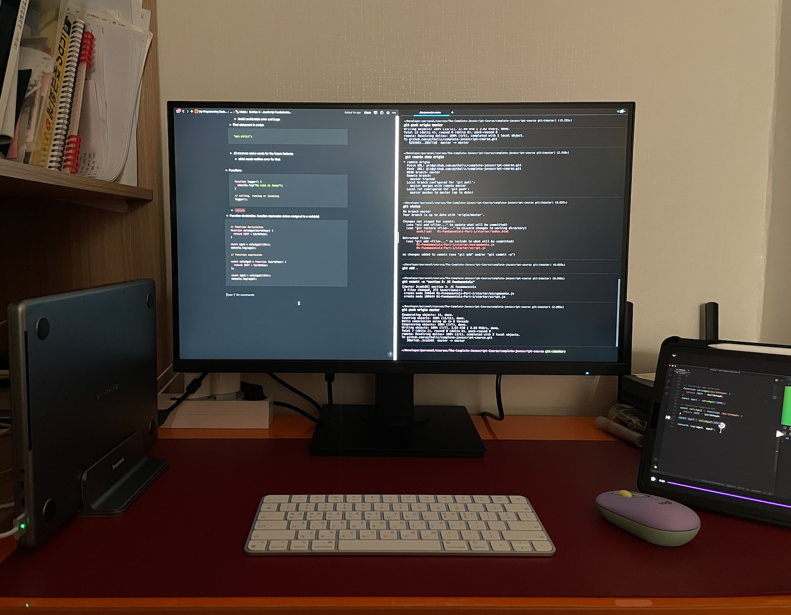
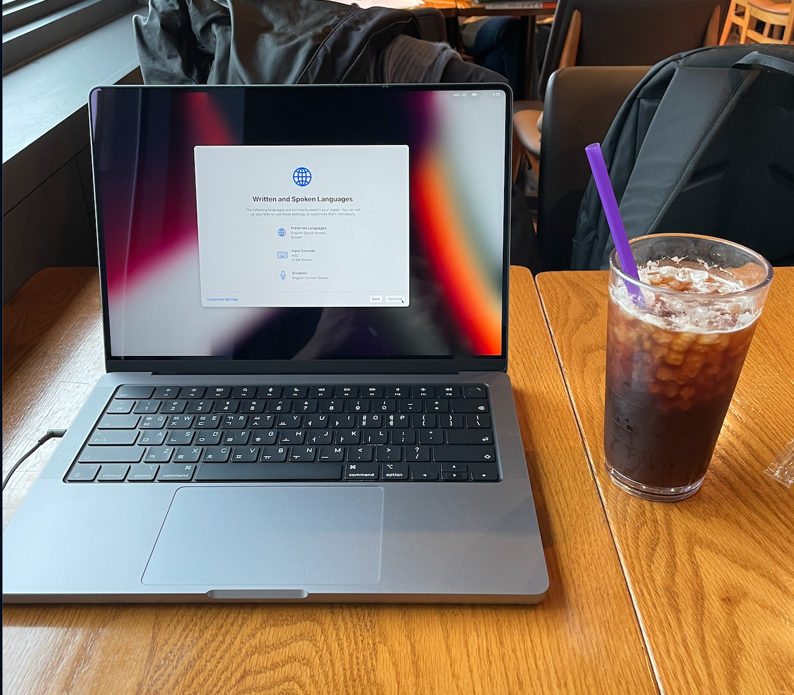
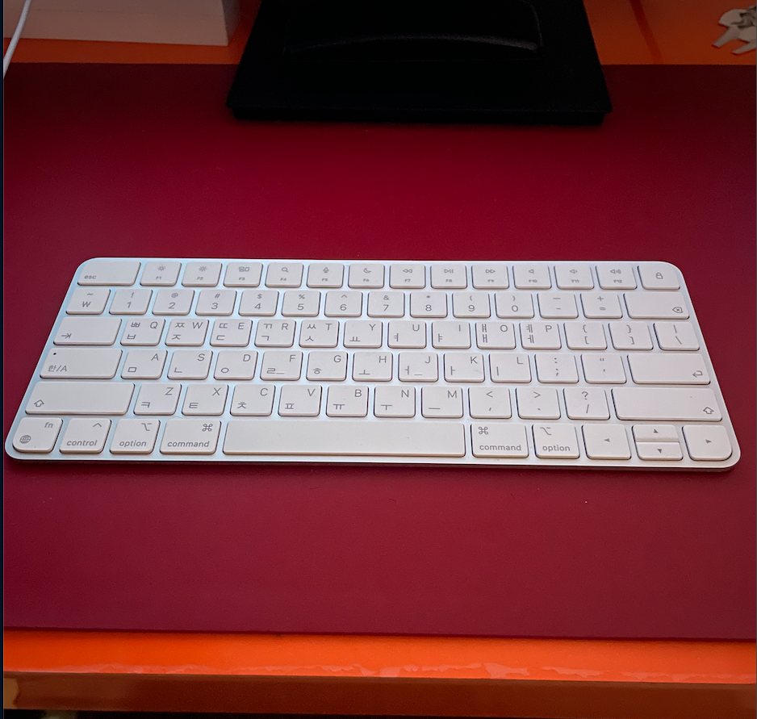
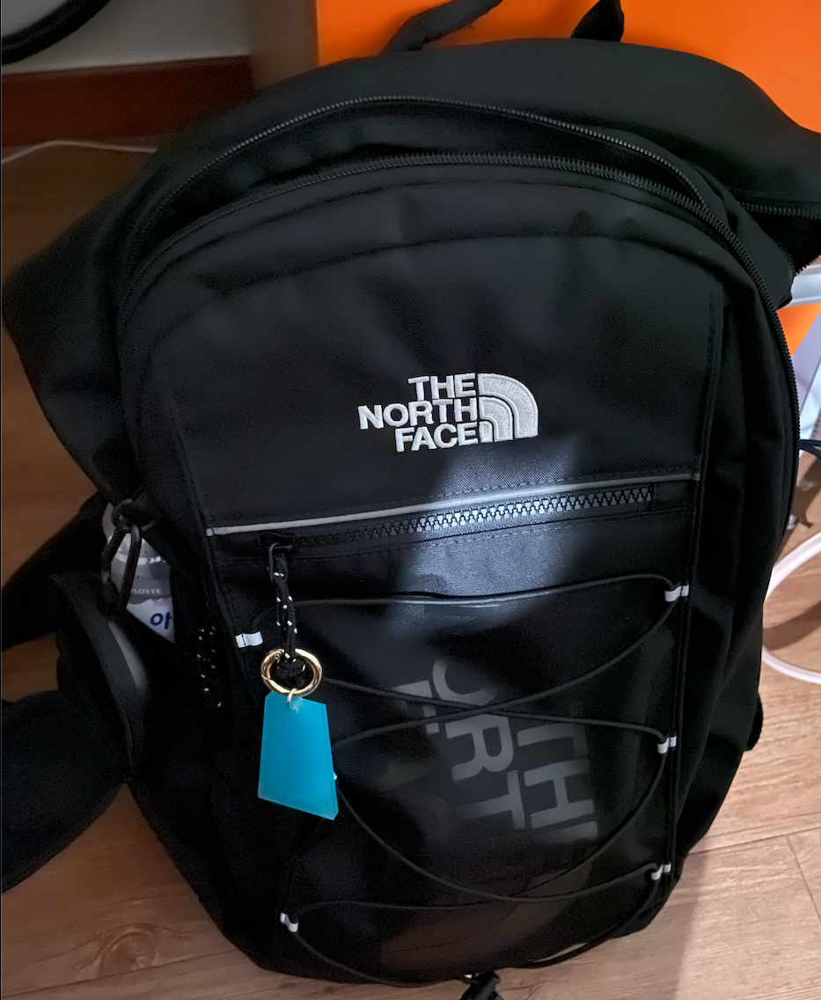
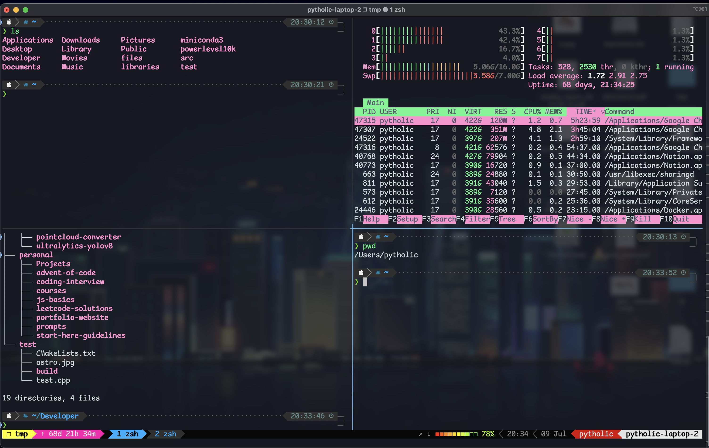
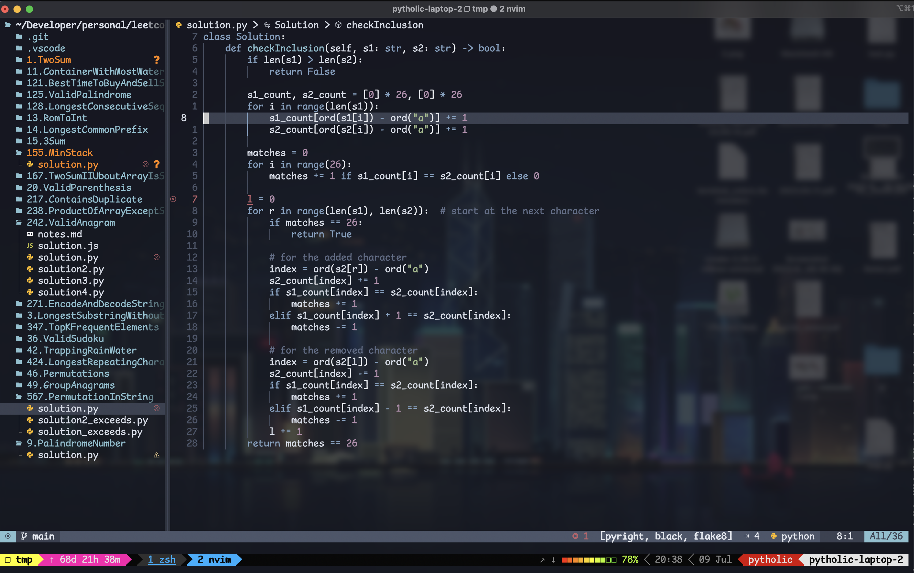
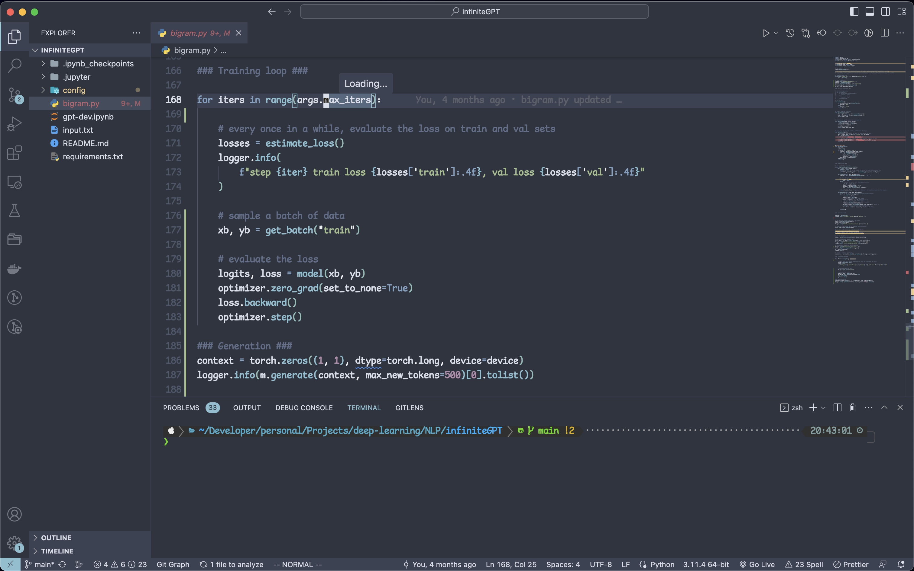

Gear

Setup
My minimal setup

Laptop
I have Macbook M1 Pro 2022 for personal use. In the office I am using intel Macbook with GPU servers.

Keyboard
I like scissor keys, not mechanical. I mostly use Magic keyboard or Logitech.

Backpack
I like The North Face. It has a lot of space and the quality is good.
I use iPhone 12 Pro and iPad Pro 11 inch (4th Gen). For storage I use WD Elements and Samsung SSD.
Software
Terminal & Shell
I use Unix systems only. No Windows. I used oh-my-zsh with powerlevel10k theme. I used tmux to split my terminal and sessions. I use this configuration.

Git Tools
I use lazygit or sourcetree for git stuff. Sometimes I just use CLI for it.
Code Editors
I use lunarvim for quick coding and VS Code for larger projects. I like the "Nord" theme with some custom configuration.
LunarVim Setup

VS Code Setup

Dotfiles & Configuration
All my setup, extensions and configs are available in this repository.